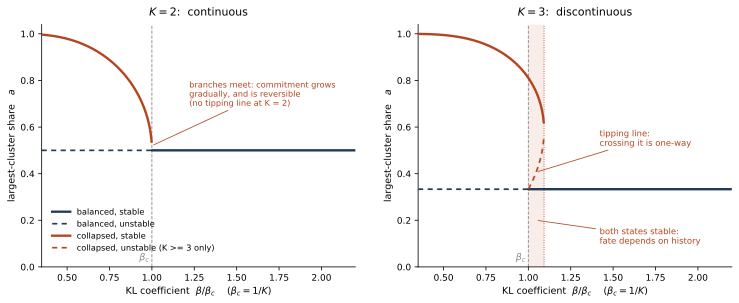

6 Minimum-Entropy Learning
A model that answers the same question five different ways is telling us something. This chapter is about turning that signal — a model’s disagreement with itself, measurable without any ground truth answer — into a training objective, and about what such an objective can and cannot deliver.
The true result is more limited than people often say, and it is important to say this clearly from the beginning. Minimising the entropy of a model’s own answers is a strikingly effective way to elicit capability the model already has: on mathematics it matches verifier-based reinforcement learning while using no labels at all. It cannot add capability, and that is not a defect of present implementations but a consequence of a training loop that never touches ground truth (Section 6.7). Its characteristic failure is equally structural. Left unchecked, the objective drives the model to a single confident answer, right or wrong; Section 6.6 shows that this is not an implementation nuisance to be tuned away but a first-order transition in a mean-field free energy — an abrupt jump rather than a gradual drift — with a computable critical point and, whenever three or more distinct answers compete, hysteresis: a memory effect that makes the jump one-way. That is why the methods that survive their own objective all hold the entropy above a floor — by reset, by fairness term, or by filter — and why no choice of regularisation strength can be made to serve instead. In the implementation this chapter examines most closely, the floor currently sits at zero — a configuration its own ablations arrived at, and one whose published runs completed stably. Section 6.6 argues there is no contradiction in that, once the floor’s role is named correctly: it is a stopping rule that decides how much of the model’s diversity sharpening spends, not a stability device, and in the published runs a cruder stopping rule — the finite training budget — was doing its work.
Three cautions run through what follows. The name is unfortunate: minimum-entropy learning is a family of objectives and has nothing to do with the Rényi min-entropy \(H_\infty\) of Chapter 2. The physics is routinely oversold: Schrödinger’s “order from order” turns out to be a genuine and clarifying reading of what these methods do, whereas Prigogine’s minimum-entropy-production principle does not survive contact with the details, and Section 6.9 says why in more detail. And the history is longer than the modern literature usually recounts — the objective and the term that balances it appear side by side as early as 1991, and the pairing has since been arrived at independently in several communities (Section 6.3).
6.1 Two regimes, and a warning about the name
The maximum-entropy principle of Section 2.2 answers a question about honesty: given that we have measured a few things and nothing else, which distribution commits us to the least? The minimum-entropy principle answers a question about commitment, and it applies in a regime the first one never contemplates. Suppose the distribution in front of us is not a summary of our ignorance but the output of a model that has already absorbed an enormous amount of information. Its dispersion is then no longer a virtue to be preserved; it is a symptom. A model that answers the same question five different ways is telling us something, and what it is telling us can be turned into a training signal.
The two principles are therefore not rivals. They act on different objects at different moments: maximum entropy shapes the distribution we assume, minimum entropy sharpens the distribution a trained model produces. A system that only maximises entropy generates candidates forever and never decides; one that only minimises it becomes rigid and confidently wrong. This chapter mainly discusses the second failure, as it is the main problem for the methods covered here.
Before going further, a terminological issue has to be cleared. Chapter 2 introduced the min-entropy \(H_\infty(p) = -\log \max_x p(x)\), the \(\alpha \to \infty\) member of the Rényi family, used in cryptography to bound an adversary’s first-guess probability. That quantity has nothing to do with the subject of this chapter. Here, “minimum-entropy learning” names a class of objectives — procedures that reduce the entropy of a model’s predictive distribution — not a particular entropy functional. The collision is unfortunate and it is now standard in both literatures, so it is best met head on. As it happens, the connection is not quite empty: Section 6.5 shows that the objective actually implemented by the method at the centre of this chapter is the Rényi entropy at \(\alpha = 2\), a different member of the same family.
6.2 From word-level to meaning-level uncertainty
Turning “the model contradicts itself” into a number requires deciding what counts as a contradiction, and the obvious choice fails immediately. Ask a language model for the capital of France five times and it may return Paris, It is Paris, The capital of France is Paris, Paris, France, and Paris — it has been since 987. These are five distinct token sequences. If we calculate entropy at the token level, based on the distribution over next words, it might suggest high uncertainty—even when, in reality, the model is certain. For example, if you ask which paper first documented an obscure phenomenon, the model might return five distinct and seemingly plausible citations, each actually incompatible with the others. In such cases, the token-level entropy could be the same as, or even lower than, situations where the correct answer is always given. This happens because the model generates convincing but fabricated responses with confidence on a word-by-word basis.
The solution is to group together outputs with the same meaning before making any measurement. Let \(\sim\) be an equivalence relation on responses that identifies those with the same meaning, and let \(\mathcal{C}\) be the resulting set of clusters. Sampling \(G\) responses \(o_1, \dots, o_G\) from the model for a prompt \(q\) and writing \(\hat p_c = |c| / G\) for the empirical frequency of cluster \(c\), the semantic entropy is
\[ H_{\text{sem}}(q) = -\sum_{c \in \mathcal{C}} \hat p_c \log \hat p_c . \]
This is Shannon’s formula applied to a coarser \(\sigma\)-algebra, which is the whole of the idea. In the Paris case all five responses fall into one cluster and \(H_{\text{sem}} = 0\). The measurement now tracks what we care about, and the repetition exploit disappears, because repeating oneself does not create a new cluster.
Semantic entropy was introduced for uncertainty quantification (Kuhn et al. 2023) and reached wide attention as a hallucination detector (Farquhar et al. 2024): resample an answer ten times, cluster by meaning, and flag the high-entropy cases before a user sees them. Its appeal is that the signal is available with no answer key, no reference database, and no change to the model — which makes it deployable exactly where verification is hardest. But it is only a detector. It says when not to trust an answer; it does not produce a better one. The rest of this chapter concerns the obvious next question: if this uncertainty can be measured, can it be optimised?
6.3 Entropy minimisation as an objective: a short history
The idea of adding an entropy term to a loss and descending it is not new, and its history is worth tracing, because the same pair of ideas has surfaced independently in several communities, under different names and with different emphases — a pattern that is common wherever one piece of mathematics serves problems with different constraints. Everything the next sections struggle with has been met before.
Both terms are already present in 1991. Bridle et al. (1992) asked how to train a classifier on unlabelled data alone, and proposed maximising the mutual information between the input and the predicted class. Decomposed, that objective reads
\[ I(c\,;x) \;=\; \underbrace{H(\bar y)}_{\text{fair}} \;-\; \underbrace{\overline{H(y)}}_{\text{firm}}, \]
where \(y\) is the predictive distribution for one input and \(\bar y\) its average over the dataset. The second term is entropy minimisation exactly as it is practised today: make each individual prediction decisive. The first is the thing that stops the second from being satisfied by fraud, since a classifier that answers “class 3” to everything is perfectly decisive and carries no information at all. Bridle and his co-authors state the point in so many words, observing that it is trivial to achieve either desideratum alone, and their summary of what a working objective must be — firm but fair — remains the clearest available description of what is at stake.
The two terms then travelled separately. Grandvalet and Bengio (2004) brought entropy minimisation to semi-supervised classification: augment the likelihood on labelled data with \(-\lambda \sum_{x \in \mathcal{U}} H\big(p_\theta(y \mid x)\big)\) over the unlabelled set, pushing the classifier towards confident predictions on data it has never been told the answer for. The justification is the cluster assumption — that decision boundaries should fall in low-density regions — and under it, confident predictions on unlabelled points are evidence of a boundary in the right place. It is the firm term on its own, and the setting explains why that is a reasonable formulation there: the labelled likelihood anchors the classifier to all \(K\) classes, so the firm term can stand alone in a way it cannot in the fully unsupervised case, and a fairness term has no obvious work to do. This anchored formulation became the standard reference point for the modern literature, and pseudo-labelling (Lee 2013) — whose author explicitly identifies it with entropy regularisation — operates in the same anchored regime. The fairness term returned to wide use in 2020, when Berthelot et al. (2020) introduced it under the name distribution alignment and traced the idea back to Bridle’s mutual-information objective, observing that it had been proposed more than twenty-five years earlier and had, to their knowledge, not been in use in contemporary semi-supervised learning. Read as a whole, the record is less a story of anything being lost than of the two terms mattering in different regimes: as long as a supervised anchor was present, the firm term alone was enough; the fair term becomes essential exactly when the anchor is removed — which is the situation of this chapter.
What the field eventually converged on is not one fix but a three-term structure. Drawing on what has proven effective, any objective for unlabelled data must include all of the following components, with each omission leading to its own characteristic failure:
| term | what it buys | what its absence costs |
|---|---|---|
| conditional entropy down — firmness | decisive predictions | predictions stay diffuse and carry no usable signal |
| marginal entropy up, or an equipartition constraint — fairness | use of the whole label space | everything collapses onto one class |
| a capacity, smoothness or invariance constraint | classes that mean something | the partition fragments, or becomes balanced and arbitrary |
That two of the three do not suffice is not a conjecture. Gomes et al. (2010) demonstrate both failures side by side on data constructed to expose them: dropping fairness lets decision boundaries vanish and clusters disappear, dropping the capacity term shatters the data into a large number of categories. The equipartition methods make the third failure vivid — a constant encoder paired with a uniform code satisfies a balance constraint exactly, which is why Asano et al. (2020) and Caron et al. (2020) must couple it to an augmentation-invariance objective. And Caron et al. (2021) separate the two collapse attractors quantitatively: without centring the output entropy falls to zero, without sharpening it rises to \(\log K\), and only the two together hold a representation in between.
One mechanism, six notations. The most striking feature of this literature is how many communities arrived at the fairness term independently — as a bonus in the loss, as a reweighting of the pseudo-label, as an edit to the logits, and as a constraint on the assignment matrix. These are objects of four different kinds, and it is worth saying precisely in what sense they are the same thing, because the ways in which they are not turn out to matter.
Fix the notation for the rest of this section. A network maps an input \(x\) to logits \(z_c(x)\) over \(K\) classes, giving predictions \(p_c(x) = \operatorname{softmax}(z(x))_c\), and over a batch or dataset of \(N\) inputs the class marginal is the average prediction
\[ \bar p_c \;=\; \frac{1}{N} \sum_{n=1}^{N} p_c(x_n), \qquad \textstyle\sum_c \bar p_c = 1 . \]
\(\pi_c\) denotes the target class distribution for class \(c\)—that is, the desired proportion of examples assigned to each class. In most typical cases, we want all classes to be equally represented, so \(\pi_c\) is set to the uniform distribution: \(\pi_c = 1/K\), where \(K\) is the total number of classes. In some scenarios, prior knowledge may justify setting a non-uniform target distribution.
Collapse is the statement that \(\bar p\) concentrates on one class; fairness is any mechanism that resists it. The unifying observation is that all six act on the predictions in the same way:
Each replaces the logits \(z_c(x)\) by \(z_c(x) - \gamma_c\) for a per-class offset \(\gamma_c\) increasing in how over-represented class \(c\) currently is. What distinguishes them is how \(\gamma_c\) is estimated, and how far the resulting marginal is driven towards its target.
| mechanism | offset \(\gamma_c\) | enforcement | acts on |
|---|---|---|---|
| marginal-entropy bonus \(+\lambda H(\bar p)\) | \(\propto\, p_c(x)\big(\log \bar p_c - \mathbb{E}_{p(x)}\!\log \bar p\big)\) | soft penalty, one gradient step | the loss |
| \(-\lambda D_{\mathrm{KL}}(\bar p \,\|\, \mathrm{Unif})\) | as above | soft penalty, one gradient step | the loss |
| distribution alignment | \(\log \bar p_c - \log \pi_c\) | one Sinkhorn step | the pseudo-label |
| logit debiasing | \(\lambda \log \bar p_c\) | one Sinkhorn step (\(\lambda = 1\)) | the logits |
| centring | \(\overline{z_c}\), a moving average | one step, on a lagged estimate | the teacher’s logits |
| Sinkhorn equipartition | the \(\gamma\) making \(\bar p\) exactly uniform | hard constraint, at convergence | the assignments |
Reading in order: the marginal-entropy bonus of Bridle et al. (1992), Hu et al. (2017) and Liang et al. (2020); the same quantity written as a divergence from uniform; the distribution alignment of Berthelot et al. (2020); logit debiasing (Menon et al. 2021; Wang et al. 2022); the centring operation of Caron et al. (2021); and the Sinkhorn equipartition constraint of Asano et al. (2020) and Caron et al. (2020).
Rows three, four and six are the same operation at different stopping times. With a uniform target \(\pi_c = 1/K\), distribution alignment reweights the prediction to \(\tilde q_c \propto p_c(x)/\bar p_c\), which in logits is \(z_c(x) - \log\bar p_c\) up to a per-example constant — logit debiasing at \(\lambda = 1\). And if the predictions are arranged into the matrix \(Q_{cn} = p_c(x_n)/N\), whose columns already sum to \(1/N\), its row sums are exactly \(\bar p_c\), so the first row-normalisation of the Sinkhorn iteration towards \(U\big(\tfrac1K\mathbf{1}, \tfrac1N\mathbf{1}\big)\) rescales row \(c\) by \(1/(K\bar p_c)\): the same offset once more. Logit debiasing is one Sinkhorn step; Sinkhorn is logit debiasing run to convergence.
This distinction is important, and it is a common source of confusion. One debiasing step does not make the marginal uniform. It makes the row sums uniform, but the per-example softmax that follows is a column renormalisation, and that undoes part of the correction — which is precisely why Sinkhorn alternates rather than stopping. The residual shrinks by a roughly constant factor of about three per pass: with \(K = 10\) classes and \(N = 256\) examples drawn from a moderately confident network, the total-variation distance from uniform runs \(0.060 \to 0.020 \to 0.0064 \to 0.0021\), falling to about \(10^{-7}\) after a dozen passes and to machine precision after about thirty. A single step therefore buys most of the correction and none of the guarantee, which is the operative difference between a method that discourages collapse and one that forbids it. Row two, by contrast, is identical to row one: \(D_{\mathrm{KL}}(\bar p \,\|\, \mathrm{Unif}) = \log K - H(\bar p)\), so the two objectives differ by a constant and have the same gradient everywhere.
The remaining two relations are approximations, and both gaps have a definite sign. The gradient of \(H(\bar p)\) is not the flat offset \(\lambda\log\bar p_c\): it carries a factor \(p_c(x)\), so it acts on each example only through the classes that example is already predicted to belong to, and it is centred, so within an example it merely redistributes. The hand-designed offset applies the full correction to every example unconditionally. They agree on sign and on monotonicity in \(\bar p_c\), and on little else — which is also why the two are calibrated differently: \(\lambda = 1\) is a canonical, tuning-free setting for the logit correction, being exactly the Bayes adjustment that maps a model with implicit prior \(\bar p\) onto a uniform one (Menon et al. 2021), whereas the entropy bonus has no distinguished coefficient and must be tuned.
Centring differs along another axis entirely. Subtracting the mean logit \(\overline{z_c}\) is, because \(\log p_c(x) = z_c(x) - \log Z(x)\) and the log-partition is common to all classes, the same as subtracting \(\overline{\log p_c}\) — the logarithm of the geometric mean of the predictions, where debiasing subtracts the logarithm of the arithmetic mean:
\[ \begin{aligned} \gamma^{\text{debias}}_c &\;=\; \log\Big(\tfrac1N\textstyle\sum_n p_c(x_n)\Big) \\[2pt] &\;\geq\; \tfrac1N\textstyle\sum_n \log p_c(x_n) \;=\; \gamma^{\text{centring}}_c \;-\; \tfrac1N\textstyle\sum_n \log Z(x_n), \end{aligned} \]
by Jensen, with equality only if \(p_c\) is constant across the dataset; the trailing term is the same for every class and so invisible to the softmax. The gap widens with the variance of \(p_c\) over examples, so centring discounts classes that dominate a few inputs strongly and penalises only classes predicted uniformly often — a weaker and smoother intervention, which is consistent with Caron et al. (2021) needing to pair it with sharpening rather than with an explicit capacity term.
Differentiating \(H(\bar p) = -\sum_c \bar p_c \log \bar p_c\) through \(\bar p_c = \tfrac1N\sum_n p_c(x_n)\) and the softmax Jacobian \(\partial p_c / \partial z_j = p_c(\delta_{cj} - p_j)\) gives, for one example \(x\),
\[ \begin{aligned} \frac{\partial H(\bar p)}{\partial z_j(x)} &\;=\; \frac{1}{N}\sum_c \big(-\log\bar p_c - 1\big)\, p_c \big(\delta_{cj} - p_j\big) \\[2pt] &\;=\; -\frac{p_j(x)}{N}\Big(\log \bar p_j - \sum_c p_c(x) \log \bar p_c\Big), \end{aligned} \]
the \(-1\) terms cancelling because \(\sum_c p_c = 1\). Ascending \(H\) therefore subtracts this quantity from the logits, which is the offset in the first row of the table. Two features are worth noting. The bracket has \(p\)-weighted mean zero, so the update is a pure redistribution within each example; and the prefactor \(p_j(x)\) vanishes for classes the example is confidently not in, so an example already committed elsewhere contributes almost nothing to correcting an over-represented class. Neither property is shared by \(\gamma_j = \lambda\log\bar p_j\).
Six communities, six notations, one mechanism — with the caveat that the two notations most often treated as interchangeable, the entropy bonus and the logit correction, are the two that are genuinely distinct.
A second and orthogonal question — what the penalty does at the boundary of the simplex — matters for what follows, and appears not to be remarked on anywhere. Tanaka et al. (2018) penalise \(D_{\mathrm{KL}}(\pi \,\|\, \bar p)\), a fixed prior \(\pi\) against the marginal prediction \(\bar p\) — with the prior in the first slot, so the term diverges as any class’s marginal mass approaches zero: an infinitely high barrier that no finite reward can buy through. The marginal entropy \(H(\bar p)\) is bounded on the simplex, so collapsing costs at most \(\log K\), and a sufficiently strong firmness term will simply pay it. One is a hard floor and the other a soft one, and the distinction decides whether collapse is impossible or merely expensive.
Test-time adaptation is the closest analogue to the unsupervised setting. When a deployed network adapts to a shifted input distribution by minimising the entropy of its own predictions on the incoming stream (Wang et al. 2021), the labelled anchor is gone and collapse stops being hypothetical. Niu et al. (2023) devote a subsection to it, under a heading that says all that needs saying — online entropy minimisation tends to predict all samples to the same class. Their measurements are the strongest empirical statement available that this objective can be actively harmful when nothing holds it — accuracy on ImageNet-C at the highest corruption severity, averaged over all fifteen corruptions, with a batch-normalised ResNet-50:
| stream | no adaptation | Tent | EATA |
|---|---|---|---|
| imbalanced label order, batch 64 | 18.0 | 2.1 | 0.9 |
| balanced labels, batch size 1 | 18.0 | 0.1 | 0.1 |
Adaptation by entropy minimisation takes a network from 18% to a fraction of one per cent — far worse than leaving it alone. Both of these are deliberately adverse streams rather than the standard benchmark, which is the point: the objective is fine until the conditions that were implicitly propping it up are withdrawn. Note also that the weight regularisation of Niu et al. (2022) does not rescue it here, though it does help on backbones whose normalisation is not batch-dependent, which is itself evidence that anchoring is a weaker remedy than a structural one.
Two details of the fix Niu et al. (2023) propose are worth carrying forward. The first is that they monitor a moving average of the entropy loss and reset the model when it falls below a threshold, set to \(0.2\) — an entropy floor placed strictly inside the simplex, implemented as a discrete intervention rather than a filter. The same object returns in Section 6.4 with its role transformed: here it is a stability device rescuing a network from destruction; there, where the degenerate endpoint turns out to be quiet rather than catastrophic, a floor would serve as a stopping rule — and Section 6.6 argues that distinction is the key to reading its current setting of zero correctly. The second is that in their diagnostic experiment, on a single corruption with a group-normalised backbone, the model collapses at severity level five while at level three the gradients stay in a stable range throughout: the behaviour changes sharply as a control parameter is turned. That is the closest thing in the empirical literature to the critical value derived in Section 6.6, though it should not be read as a general safe threshold — under mixed corruptions the same backbone collapses at level three as well. Running the other way, Lee et al. (2024) argue that entropy is not a trustworthy reliability signal in the first place, since under spurious correlation confidently wrong samples are exactly the harmful ones — a result that weakens the entire filtering family and, by elimination, strengthens the case for structural remedies.
The language-model literature has adopted two of the three families and not the third. Reinforcement learning from internal feedback has taken up filtering — the two-sided entropy band described in Section 6.4, the substitution of self-certainty for entropy in Zhao et al. (2025) — and anchoring, in the form of covariance-targeted clipping and KL penalties (Cui et al. 2025). A fairness term is absent: no work in this line maximises a dataset-level marginal entropy. Part of the reason is a genuine type mismatch. The answer space of a language model is prompt-dependent, so “cluster 1” for one question has nothing to do with “cluster 1” for another and the marginal \(\bar p\) has no well-defined referent. Candidate substitutes exist — a prompt-independent output attribute such as length, format or refusal rate; a population-level coverage or pass@\(k\) target; or a floor on cluster mass within each prompt, which is what \(\delta_{\text{low}}\) would approximate if it were set anywhere above zero — but none has been tried. That the gap is real is confirmed by what happens without them: in the plain entropy-minimisation baseline that Zhao et al. (2025) run against their own method, the model “converges to producing the same character regardless of the prompt” after a few updates. That is the vision literature’s collapse, arriving in the language literature under a different name and from the same cause.
What is new in the method described next is precisely the removal of the supervised anchor. There is no labelled term at all. This is what makes the approach interesting, and it is also what returns the degeneracy in full force — a point developed in Section 6.6, where it turns out to be sharper than a mere risk of a bad optimum.
6.4 EMPO: reward agreement, not correctness
EMPO — entropy-minimised policy optimisation — applies the objective to the elicitation of reasoning in large language models, in a fully unsupervised setting (Zhang et al. 2025). The context is the reinforcement-learning recipe behind recent reasoning models (Shao et al. 2024; DeepSeek-AI 2025): sample several attempts at a question, score each against a ground-truth answer with an automatic verifier, and reinforce the winners,
\[ r_i = \mathbb{1}\big[\,\text{verify}(o_i, a) = \text{true}\,\big]. \]
The recipe works remarkably well, but the bottleneck sits entirely in the symbol \(a\). Every training question needs a gold answer and a cheap, reliable checker. Mathematics has one — compare the final expression — and code has a test suite. A differential diagnosis does not; neither does a proposed mechanism, a study design, or a molecule nobody has synthesised. The algorithm is not the scarce resource. The verifier is.
EMPO removes \(a\) from the loop. Given an unlabelled question \(q\), it samples \(G\) responses, partitions them by meaning as in Section 6.2, and pays each response the share of the group that agrees with it:
\[ r_i = \hat p_{\,c(i)} = \frac{|c(i)|}{G}, \]
where \(c(i)\) is the cluster containing \(o_i\). Responses in the majority cluster are reinforced and outliers are suppressed, with no reference to whether the majority is right. In the released implementation, the equivalence relation is a pipeline of answer extraction and symbolic equality for mathematics, and a small dedicated verifier model for open-ended reasoning — cheap in both cases, and cheap in a way that does not require knowing the answer, though for the learned verifier that last clause turns out to need a careful audit, taken up in Section 6.7.
Two guards accompany the reward. The first is a band on the entropy: training proceeds only on questions with \(\delta_{\text{low}} < H_{\text{sem}}(q) < \delta_{\text{high}}\). Too much dispersion and the majority cluster is noise; too little and there is nothing left to sharpen but overconfidence. The second is a set of anti-gaming penalties — an empty answer is penalised outright, and an answer that merely echoes the question earns nothing — which prevent the model from manufacturing agreement without saying anything.
It is worth examining how the first guard is realized in practice, because the implementation ended up stricter than the design intended—and understanding why is revealing. The results above were obtained with the band active. When the experiments were later rebuilt on a different training framework, an ablation found the thresholds made limited difference, and they were relaxed to keep any group whose entropy is neither zero nor close to its ceiling: \(0 < H_{\text{sem}} < 0.6 \log G\), over a group of \(G\) samples. The two endpoints (\(0\) and \(\log G\)) are redundant. A group in which all \(G\) responses agree has \(H_{\text{sem}} = 0\) and pays every response the same reward, \(1\); a group in which no two agree has \(H_{\text{sem}} = \log G\) and again pays every response the same reward, \(1/G\). Since the advantage subtracts the group mean, both cases contribute an identically zero update whether they are filtered or not. A filter acting at the endpoints removes only groups the optimiser was already ignoring — consistent with the ablation’s verdict that the original thresholds could be relaxed at little cost.
What remains is the upper bound alone, and it is a real constraint: at \(G = 16\) it admits a group only if its meanings are no more dispersed than roughly five equally-sized clusters. But it guards against one failure only — a majority that is really noise. Nothing in the current configuration bounds the entropy from below at any value strictly inside the simplex. That asymmetry is not a detail, but reading it correctly takes some care, and Section 6.6 supplies the reading: the floor turns out to be a stopping rule — the mechanism that decides where sharpening halts, per prompt — rather than a stability device, which is why its absence coexists peacefully with stable published runs governed by a short horizon, and why the ablation that retired it, run at exactly such a horizon, was not positioned to see what it does.
Empirically the method closes most of the gap to supervision without using any. On five mathematics benchmarks with a 7B base model, averaging over the suite:
| Method | What it needs | Score |
|---|---|---|
| Base model | — | 33.7 |
| Supervised fine-tuning | \(\{q, r, a\}\) | 39.0 |
| Verifier-based RL (GRPO) | \(\{q, a\}\) | 51.7 |
| EMPO | \(\{q\}\) | 51.6 |
Here \(q\) is the question, \(a\) the gold answer, and \(r\) a reasoning trace. Two things in this table deserve to be said plainly. The first is that supervised fine-tuning, which sees the most, does worst of the three — imitation of traces is a weaker signal than selection among the model’s own attempts. The second is that the tie between EMPO and verifier-based RL holds on mathematics; on open-ended reasoning a real gap of several points remains. The honest summary is that removing labels costs little in a domain where the model is already strong, and more elsewhere.
6.5 What “reward agreement” actually optimises
It is worth computing what the reward above does in expectation, because the answer is both cleaner and different from the one usually stated.
Averaging \(r_i\) over the group, each response contributes the frequency of its own cluster, so a cluster of size \(|c|\) contributes \(|c|\) times \(\hat p_c\):
\[ \bar r \;=\; \frac{1}{G}\sum_{i=1}^{G} \hat p_{\,c(i)} \;=\; \sum_{c \in \mathcal{C}} \hat p_c^{\,2} \;=\; \exp\big(-H_2(\hat p)\big), \]
where \(H_2(p) = -\log \sum_c p_c^2\) is the Rényi entropy of order two, also called the collision entropy (Rényi 1961). The quantity being maximised is the collision probability: the chance that two independent samples from the model land on the same meaning.
This deserves a frank note, and then a correction to the way such paper-versus-code mismatches are usually described. The objective as written in the paper is the Shannon semantic entropy of Section 6.2; the objective the code implements is \(H_2\). These are genuinely different functions: their gradients differ, and \(H_2\) weights the dominant cluster more heavily than Shannon does. But they are not different kinds of object, and naming the family they belong to turns the discrepancy from an inconsistency into a choice that can be argued for.
A unified family, parametrized by order. Consider the Rényi entropy \(H_\alpha\) from Section 2.1.4. Instead of rewarding responses based on their cluster’s simple share, generalize by awarding a power of that share:
\[ r_\alpha(c) \;=\; \frac{p_c^{\,\alpha-1} - 1}{\alpha - 1}, \qquad \mathbb{E}_{c \sim p}\big[r_\alpha\big] \;=\; \frac{\sum_c p_c^{\,\alpha} - 1}{\alpha - 1}, \]
an expectation monotone in \(H_\alpha\) for every \(\alpha > 1\), so that maximising it minimises the entropy of that order. Two members are already in front of us. As \(\alpha \to 1\) the reward tends to \(\log p_c\) and its expectation to \(-H_{\text{sem}}\), which is the paper’s objective. At \(\alpha = 2\) the reward is \(p_c - 1\), which differs from the implemented reward \(p_c\) by a constant — and constants are invisible here, since the advantage subtracts the group mean before anything is done with it. The stated objective and the implemented one are the \(\alpha \to 1\) and \(\alpha = 2\) members of a single one-parameter family.
A third member turns up in the filters. The surviving band is written in terms of \(H_{\text{sem}}\), but the majority-share cutoffs that have at various points stood in for it are thresholds on \(\max_c p_c\), which is \(e^{-H_\infty}\). Between the derivation, the reward and the gate, the algorithm therefore touches three orders at once: \(\alpha \to 1\), \(\alpha = 2\), \(\alpha = \infty\). The min-entropy that Section 2.1.4 was at pains to separate from minimum-entropy learning turns out to appear here after all — not as the objective, but as the gatekeeper.
Why order two is the defensible choice. Three reasons, of which the first is decisive. A group holds only \(G\) samples — seven to sixteen in the released configurations — so \(p_c\) is never known, only estimated by \(\hat p_c = |c|/G\). Shannon entropy admits no unbiased estimator at any finite \(G\): the expectation of any estimator is a polynomial in \(p\), and entropy is not a polynomial (Paninski 2003, Prop. 8). Collision probability is a polynomial, of degree two, and is therefore estimable without bias by \(\sum_c |c|(|c|-1) / G(G-1)\). The gap is not academic: at \(G = 8\) over five clusters the plug-in Shannon estimator is biased downward by \(0.28\) nats, a fifth of the quantity being measured, while the degree-two estimator is exact. Second, the reward stays bounded: a singleton cluster earns \(1/G\), where the order-one reward \(\log \hat p_c\) hands it \(-\log G\), a spike that grows with the group size. Third —
\[ \log K - H_\alpha \;=\; \frac{\alpha}{2K}\sum_c \varepsilon_c^2 \;+\; O(\varepsilon^3), \qquad p_c = \frac{1 + \varepsilon_c}{K}, \quad \textstyle\sum_c \varepsilon_c = 0, \]
so near the uniform distribution every order is the same function of the distribution, differing only by the factor \(\alpha\). A Shannon derivation and a collision-entropy implementation give parallel gradients wherever the meanings are near-balanced, which — since the band admits only high-entropy questions — is where training begins. They part company as \(p\) concentrates, which is precisely the regime Section 6.6 is about.
They are not, for all that, the same function. Both are Schur-concave, so they agree on any pair ordered by majorization, and both are maximised by the uniform distribution and minimised by a point mass. But majorization is a partial order, and on incomparable pairs the two can disagree outright. A group placing half its mass on one meaning and scattering the rest over nine others, \(p = (0.5,\ 0.056^{\times 9})\), has Shannon entropy \(1.79\) against \(1.39\) for a group split evenly four ways — while its collision entropy is \(1.28\) against \(1.39\). One says the first group is the more diverse; the other says it is the less. Which order is used is a modelling decision, not a formality.
A second and independent axis: from a partition to a kernel. Everything above holds the hard clustering fixed. Relaxing it is a separate generalisation, and the two compose. Replace the equivalence relation with a positive semi-definite similarity kernel over the sampled answers, normalise it to unit trace as \(\rho = K / \operatorname{tr} K\), and read the entropy off the spectrum, \(H_\alpha(\rho) = \frac{1}{1-\alpha}\log \operatorname{Tr}\rho^{\alpha}\), with \(\alpha \to 1\) giving the von Neumann entropy of Chapter 2. The classical cases are recovered exactly rather than approximately: when \(K\) is block-diagonal with all-ones blocks, the non-zero eigenvalues of \(\rho\) are the cluster masses \(p_c\) (Pasarkar and Dieng 2024), so \(\alpha \to 1\) returns \(H_{\text{sem}}\) and \(\alpha = 2\) returns \(-\log\sum_c p_c^2\). The resulting two-parameter family — an order, and a choice of hard or soft — is the order-\(q\) Vendi score (Friedman and Dieng 2023; Pasarkar and Dieng 2024), which coincides with the matrix-based Rényi entropy introduced independently by Sánchez Giraldo et al. (2015), and which is, under the name Hill numbers, the standard family of diversity indices in ecology (Hill 1973; Leinster and Cobbold 2012).
This is worth spelling out because of one claim it would be easy to make and wrong. The kernel relaxation is not available only for collision probability. Nikitin et al. (2024) build exactly the \(\alpha \to 1\) version for language models, under the name kernel language entropy, and prove that for any semantic clustering there exists a kernel whose von Neumann entropy equals the semantic entropy — by the same block-diagonal construction. What distinguishes \(\alpha = 2\) is cost, not existence: \(\operatorname{Tr}\rho^2 = \|\rho\|_F^2\) is a sum of squares needing no eigendecomposition, while every other order needs the spectrum. Over a group of sixteen that is free either way; over a corpus it is not.
The gap worth recording is the empty cell. The kernel literature has developed the \(\alpha \to 1\) corner and the clustering literature the \(\alpha = 2\) one, and a soft, order-two semantic objective — the natural home for a reward that is already a collision probability — appears not to have been tried.
There is also a pleasing coincidence in the expression \(\sum_c p_c^2\). It is exactly the chance-agreement term \(p_e\) in Cohen’s \(\kappa\), the standard correction applied when two human raters are scored for agreement (Cohen 1960). In the inter-rater setting one computes the agreement two independent raters would reach by luck alone, and subtracts it. Here the same expression is computed over one model’s repeated answers and maximised. The statistical object that measures how much of an agreement is worthless is, read in the other direction, the training signal.
6.6 The free-energy view, and why entropy collapses
Here is the conclusion of this section, before the argument for it. Rewarding agreement is a rich-get-richer process, and whether it runs away is decided by a single number crossing one. On one side of that threshold, an accidental imbalance between meanings dies out and the model stays honest about what it does not know; on the other side, the imbalance feeds on itself and the model commits to one meaning — and nothing in the objective checks whether that meaning is correct. Two properties of the crossing make it worse than an ordinary tuning problem. It is abrupt: the entropy barely moves for most of the approach, then falls off a cliff. And when more than two meanings compete, it has memory: the collapsed state is already stable on the safe side of the threshold, so a single large fluctuation can tip the system over, and moving the knob back afterwards does not undo it. Setting the knob near its critical value is therefore not a defence. A floor on the state is — though what exactly it defends, and what stood in for it in the published runs, takes the rest of the section to state precisely.
Everything below is the derivation, and the machinery is that of Chapter 3.
The control parameter is a temperature, and it is a familiar one. Anyone who has sampled from a language model has already met the object doing the work here. Sampling at temperature \(\tau\) replaces the model’s distribution by \(p(o)^{1/\tau}\) and renormalises: large \(\tau\) flattens the distribution, small \(\tau\) sharpens it, and \(\tau \to 0\) is arg-max decoding. What follows is that same operation with two modifications. The exponent is a reward rather than the model’s own log-probability, and — this is the entire source of the difficulty — the reward is itself the probability being adjusted. It is a softmax whose logits are its own outputs.
Start from the canonical form of the policy-optimisation problem, in which reward is traded against a Kullback–Leibler penalty that keeps the updated policy near a reference \(\pi_0\):
\[ \max_{\pi}\;\; \mathbb{E}_{\pi}[\,r\,] \;-\; \beta\, D_{\mathrm{KL}}\!\big(\pi \,\|\, \pi_0\big). \tag{6.1}\]
This is the minimisation of a free energy, with \(-r\) in the role of energy and \(\beta\) in the role of temperature, and it can be solved in closed form. Add a Lagrange multiplier \(\lambda\) to enforce that the probabilities sum to one, and differentiate with respect to \(\pi(o)\):
\[ \begin{aligned} &\frac{\partial}{\partial \pi(o)} \left[ \sum_{o'} \pi(o') r(o') - \beta \sum_{o'} \pi(o') \log\frac{\pi(o')}{\pi_0(o')} + \lambda\Big(1 - \sum_{o'} \pi(o')\Big) \right] \\[4pt] &\qquad = r(o) - \beta\log\frac{\pi(o)}{\pi_0(o)} - \beta - \lambda = 0 . \end{aligned} \]
Solving for \(\pi(o)\) and absorbing everything independent of \(o\) into a normaliser gives the Gibbs tilt of the reference,
\[ \pi^\star(o) = \frac{\pi_0(o)\, e^{\,r(o)/\beta}}{Z}, \qquad Z = \sum_{o} \pi_0(o)\, e^{\,r(o)/\beta} , \tag{6.2}\]
which is the unique maximiser, since the KL term is strictly convex in \(\pi\) and the reward term is linear. Substituting back, the optimal value is \(\beta \log Z\) — a log-partition function, exactly the free energy of Chapter 3. This is the same exponential family that Section 2.2 produces from the other direction: there, maximising entropy under a moment constraint; here, maximising reward under a divergence constraint.
The temperature reading is worth making concrete. Take three semantic clusters, a uniform reference \(\pi_0 = (\tfrac13,\tfrac13,\tfrac13)\), and rewards \(r = (1.0,\, 0.5,\, 0.0)\). Then Equation 6.2 gives
| \(\beta\) | \(\pi^\star\) | \(\mathbb{E}[r]\) |
|---|---|---|
| \(\infty\) | \((0.333,\, 0.333,\, 0.333)\) | 0.500 |
| \(2\) | \((0.419,\, 0.326,\, 0.254)\) | 0.582 |
| \(1\) | \((0.506,\, 0.307,\, 0.186)\) | 0.660 |
| \(0.25\) | \((0.867,\, 0.117,\, 0.016)\) | 0.925 |
| \(\to 0\) | \((1,\, 0,\, 0)\) | 1.000 |
At high temperature the update does nothing and the policy stays at its reference; at zero temperature it becomes greedy and places all mass on the best cluster. The KL coefficient is precisely the knob that decides how far towards the arg-max a single update is allowed to travel — the role played by \(\tau\) in temperature sampling, now attached to a reward instead of a log-probability.
Nothing so far is specific to entropy minimisation. What is specific is that under EMPO the reward is not an external function of the response: by Section 6.4, \(r\) is the cluster frequency of the very policy being optimised. Writing \(p_c\) for the probability the policy assigns to cluster \(c\) and \(p^0_c\) for the reference, substituting \(r(o) = p_{c(o)}\) into Equation 6.2 turns an explicit formula into a self-consistency condition:
\[ p_c \;=\; \frac{p^0_c \, e^{\,p_c/\beta}}{\sum_{c'} p^0_{c'}\, e^{\,p_{c'}/\beta}} . \tag{6.3}\]
This is a mean-field equation, of exactly the kind that describes a magnet whose spins feel the average field they themselves generate. The consequences are worth spelling out, because they turn a vague worry about instability into a quantitative statement. Take the KL anchor seriously for the moment and suppose \(\pi_0\) is genuinely fixed; the paragraphs after next remove that supposition, which is what real implementations do.
A critical value. Take a reference that is uniform over \(K\) clusters, \(p^0_c = 1/K\), and nudge the balanced solution slightly: \(p_c = 1/K + \varepsilon_c\) with \(\sum_c \varepsilon_c = 0\). Substituting into Equation 6.3, the factor \(e^{1/(K\beta)}\) is common to every cluster and cancels, leaving \(p_c \propto e^{\varepsilon_c/\beta} \approx 1 + \varepsilon_c/\beta\) to first order, so that after normalisation
\[ \varepsilon_c \;\longmapsto\; \frac{\varepsilon_c}{K\beta} . \]
An imbalance between meanings is thus multiplied by \(1/(K\beta)\) at every step. This is the number promised at the opening, and the rest of the section is a matter of where it sits relative to one. The balanced state survives a perturbation if and only if \(K\beta > 1\), so there is a critical value
\[ \beta_c = \frac{1}{K}, \]
below which the policy commits to a single cluster. The appearance of \(K\) is not an artefact: the more distinct meanings a model is entertaining, the smaller each one’s share of the group, the weaker the positive feedback any one of them can exert, and so the less braking is needed to contain it. For \(K = 2\) the self-consistency condition can be solved exactly — writing \(m = p_1 - p_2\), Equation 6.3 becomes
\[ m = \tanh\!\Big(\frac{m}{2\beta}\Big), \]
the Curie–Weiss equation — the textbook description of a magnet that spontaneously magnetises when cooled below a critical temperature — with \(\beta\) in the place of temperature and \(\beta_c = 1/2\) in the place of that critical temperature (the Curie point). One warning for readers arriving from physics, where \(\beta\) conventionally denotes inverse temperature: here it is the KL coefficient and it plays the role of \(T\) itself. Large \(\beta\) means strong regularisation, a policy held near its reference and high entropy — the hot, disordered phase; small \(\beta\) is the cold, ordered, collapsed one.
With two clusters and a uniform reference, the factor \(\tfrac12\) cancels from numerator and denominator of Equation 6.3, leaving a softmax whose logits are the cluster masses themselves. Since \(p_1 + p_2 = 1\) there is only one degree of freedom; write \(p_{1,2} = \bar p \pm \delta\) with \(\bar p = \tfrac12\) and \(\delta = m/2\). Then
\[ m \;=\; \frac{e^{p_1/\beta} - e^{p_2/\beta}}{e^{p_1/\beta} + e^{p_2/\beta}} \;=\; \frac{e^{\bar p/\beta}\big(e^{\delta/\beta} - e^{-\delta/\beta}\big)} {e^{\bar p/\beta}\big(e^{\delta/\beta} + e^{-\delta/\beta}\big)} \;=\; \tanh\!\Big(\frac{\delta}{\beta}\Big) \;=\; \tanh\!\Big(\frac{m}{2\beta}\Big), \]
by the definition of the hyperbolic tangent. The cancellation of \(e^{\bar p/\beta}\) is worth pausing on, because it is the same one that occurs at general \(K\) in the perturbation argument above: a softmax is blind to a common shift of its logits, so only differences between clusters drive the dynamics. It is also why subtracting the group baseline \(\bar r\) leaves the update direction untouched.
Whether a non-zero solution exists is then settled entirely by the slope at the origin,
\[ \frac{d}{dm}\tanh\!\Big(\frac{m}{2\beta}\Big)\bigg|_{m=0} = \frac{1}{2\beta}, \]
which is the amplification factor \(1/(K\beta)\) evaluated at \(K = 2\), as it must be — linear stability analysis is exactly this derivative. Because \(\tanh\) is concave for \(m > 0\) and bounded by one, a slope below one lets the curve fall away from the diagonal immediately and never return, so \(m = 0\) is the only solution; a slope above one carries the curve above the diagonal, and boundedness forces it back across, creating a pair of solutions \(\pm m^\star\). The two regimes are separated by \(1/(2\beta) = 1\).
Expanding \(\tanh x = x - \tfrac13 x^3 + O(x^5)\) and dividing through by \(m \neq 0\) gives \(1 = 1/(2\beta) - m^2/(24\beta^3)\), hence
\[ m^\star = 2\beta\sqrt{3\,(1-2\beta)} \;\simeq\; \sqrt{3\Big(1 - \frac{\beta}{\beta_c}\Big)} \]
near the critical point. The imbalance \(m\) — the order parameter, in physics language — grows continuously out of zero with exponent \(1/2\), the standard mean-field value. That continuity is what makes the \(K = 2\) transition second order: the state changes smoothly, with no jump. It is precisely this smoothness that fails for \(K \geq 3\).
The two regimes, step by step. The algebra is easier to trust once one has watched it happen. Both runs start from the same barely-perturbed state \(p = (0.36,\, 0.32,\, 0.32)\) with \(K = 3\); only \(\beta\) changes.
Above the threshold (\(\beta = 1.5\,\beta_c\)), the perturbation is erased and the entropy returns to its ceiling \(\log 3 = 1.0986\):
| step | \(p\) | \(H\) |
|---|---|---|
| 0 | \(0.360,\ 0.320,\ 0.320\) | 1.0970 |
| 2 | \(0.345,\ 0.327,\ 0.327\) | 1.0983 |
| 4 | \(0.339,\ 0.331,\ 0.331\) | 1.0985 |
| 6 | \(0.336,\ 0.332,\ 0.332\) | 1.0986 |
| 8 | \(0.334,\ 0.333,\ 0.333\) | 1.0986 |
Below the threshold (\(\beta = 0.75\,\beta_c\)), the same perturbation compounds and the distribution is most of the way to a point mass:
| step | \(p\) | \(H\) |
|---|---|---|
| 0 | \(0.360,\ 0.320,\ 0.320\) | 1.0970 |
| 2 | \(0.384,\ 0.308,\ 0.308\) | 1.0931 |
| 4 | \(0.432,\ 0.284,\ 0.284\) | 1.0775 |
| 6 | \(0.539,\ 0.231,\ 0.231\) | 1.0097 |
| 8 | \(0.750,\ 0.125,\ 0.125\) | 0.7358 |
The column that deserves attention is the entropy in the second table. Over the first four steps it falls by less than two per cent while the gap between the leading cluster and the others nearly quadruples, and only then does it drop. Entropy is a lagging indicator of a process that is already well advanced, which is exactly why collapse is reported as sudden: from the outside it looks like training proceeding normally and then failing without warning. The warning was in the gap between clusters, not in the entropy.
For more than two clusters the transition is discontinuous. At \(K = 2\) the dominant cluster’s mass grows continuously from \(1/2\) as \(\beta\) falls through \(\beta_c\). For \(K \geq 3\) it does not, and the cleanest evidence is a decisive experiment: hold \(\beta\) fixed, start the iteration from two different places, and see whether they agree. The balanced start carries a \(10^{-3}\) perturbation, because starting from perfect symmetry would test nothing: a perfectly balanced state stays balanced by symmetry at every \(\beta\). For \(K = 3\), reporting the converged \(\max_c p_c\):
| \(\beta\) | from balanced start | from concentrated start | |
|---|---|---|---|
| \(1.200\,\beta_c\) | 0.333 | 0.333 | balanced only |
| \(1.080\,\beta_c\) | 0.333 | 0.674 | both stable |
| \(1.035\,\beta_c\) | 0.333 | 0.768 | both stable |
| \(1.020\,\beta_c\) | 0.333 | 0.788 | both stable |
| \(1.000\,\beta_c\) | 0.811 | 0.811 | collapsed only |
Throughout the window \(\beta \in [1.000,\, 1.093]\,\beta_c\) the two states are both stable, and which one the system occupies depends on where it came from. That path dependence is called hysteresis — the system remembers its history — and it is the defining signature of a first-order transition, one where the state jumps rather than drifts. The window is empty at \(K = 2\), widens to \([1.000,\, 1.403]\,\beta_c\) at \(K = 5\) and \([1.000,\, 1.882]\,\beta_c\) at \(K = 8\) — the more meanings in play, the larger the region of ambiguity. This matches a classical model of statistical physics, the mean-field Potts model, whose transition is likewise smooth at \(q = 2\) states and discontinuous for \(q \geq 3\) (Wu 1982) — so the behaviour is a structural property of self-referential dynamics of this type rather than a peculiarity of the present problem.

code/min-entropy-phase-diagram.py.
Figure 6.1 makes the practical consequence visible. The threshold \(\beta_c = 1/K\) is not where the danger begins; it is only the last point of the safe regime — what physicists call a spinodal, the place where the balanced state finally stops surviving even small knocks. The collapsed state has already been available and stable for some distance above it. Tuning \(\beta\) to sit just above \(\beta_c\) is therefore not a safety margin — it places the system exactly in the region where both states coexist, and where a single fluctuation large enough to cross the dividing line is never recovered from. What is needed is not a carefully chosen distance from the critical point but a mechanism that acts on the state itself.
In practice there is no such reference, and collapse becomes unconditional. The stabilising mechanism above depends entirely on the KL term in Equation 6.1 anchoring the policy to a fixed \(\pi_0\). It is worth checking whether real implementations have one, and the answer is that they do not. In the released EMPO code both available training stacks disable the penalty outright: the reference-model implementation sets its KL coefficient beta: 0.0, and the large-scale implementation switches the KL penalty off everywhere it can appear — both the penalty added to the reward and the auxiliary KL loss, along with both of their coefficients — in every one of its published run scripts. The entropy bonus is likewise set to zero. There is no term anywhere in the optimiser that opposes entropy reduction.
What remains is only the implicit restraint of taking small steps. There is a standard way to read each gradient step in the language of this section (formally, as mirror descent): every update applies Equation 6.2 with the current policy in place of \(\pi_0\) and the step size in place of \(\beta\) — instead of tilting a fixed reference, each step tilts wherever the policy already stands, so the cluster probabilities evolve as \(p_c \propto p_c\, e^{p_c/\beta}\). The same perturbation analysis now gives
\[ \varepsilon_c \;\longmapsto\; \varepsilon_c\Big(1 + \frac{1}{K\beta}\Big), \]
an amplification factor strictly greater than one for every \(\beta > 0\). No step size stabilises the balanced state. A trust region — whether imposed by a small learning rate or by the unusually tight clipping range the released configuration uses — bounds how fast the policy moves, not where it ends up. Within this idealised dynamics, collapse is not a risk that a step size can tune away; it is the asymptotic behaviour, on a clock the trust region can stretch but not stop.
Two features of the group-relative advantage sharpen this rather than soften it. Advantages are computed as \(A_i = (r_i - \bar r)/s_r\) within the group of \(G\) samples. The baseline \(\bar r\) cancels exactly in Equation 6.2, since a constant shift in the exponent is absorbed by the normaliser, so subtracting the mean has no effect on the direction of the update. The division by the group standard deviation \(s_r\) does have an effect: it acts as an adaptive inverse temperature — rescaling the pull without redirecting it — and because \(s_r \to 0\) as the group becomes homogeneous, the effective temperature shrinks precisely as collapse proceeds. The pull towards the dominant cluster does not weaken near the degenerate state; it is held back only by clipping.
This is the sharpest justification available for the entropy floor of Section 6.4, and stating it correctly also dissolves what looks, at first sight, like a contradiction. The chapter has argued that a floor strictly inside the simplex is structurally necessary; the released configuration sets \(\delta_{\text{low}} = 0\); and yet the published runs completed stably and an ablation found the thresholds made little difference. If the floor were a stability device — a thing that keeps the optimiser from blowing up — those three facts could not sit together. They sit together because that is not what the floor is, and seeing what it is instead requires separating three questions that the word collapse runs together.
Does training diverge without a floor? No — and not because anything opposes the dynamics, but because the endpoint silences itself. A prompt whose group has fully agreed pays every response the same reward, the advantage is identically zero, and the prompt stops contributing gradient. The fully-agreed state is what dynamicists call absorbing — once a prompt reaches it, it never leaves — but it is also quiet: nothing visibly breaks, and reaching it looks like convergence, not failure. The catastrophic collapses of Section 6.3 — a classifier sending every input to one class, a policy emitting one character for every prompt — are cross-input degeneracies, and EMPO’s structure blocks the direct route to them: per-prompt clusters leave no shared label space for a marginal to collapse onto, and the anti-gaming penalties tax the cheapest constant policies.
Where does each prompt end without a floor? With all of its probability on a single meaning — at a corner of the simplex. That is what the mean-field analysis establishes: once the anchor is gone the balanced state is unstable at every \(\beta\), the transition is first order, and past the point of no return the commitment cannot be undone by a luckier sample later. Nothing in the optimiser selects a stopping point short of full commitment, and no setting of \(\beta\) can be made to select one — with an anchor it merely positions the system inside the window where both states coexist, and without one there is nothing to position.
Is full commitment what the method wants? Half of it is. Sharpening all the way to that corner is exactly the elicitation the method is for, on prompts where the majority is right. The other half is the cost, and it is not hypothetical, because the paper’s own measurements price it: on prompts where the majority is wrong, the commitment is equally final — and the \(\text{pass}@k\) curves of Section 6.7, converging to the base model and crossing below it on hard benchmarks, are the coverage bill for sharpening run to the end.
On this reading the floor is a stopping rule, not a safety rail: it decides how much of the distribution’s diversity sharpening is allowed to spend, per prompt, and it is the only instrument in the design that can make that decision at the level of the state. The ceiling cannot substitute — it rejects dispersion, and full commitment approaches from the other side. What operated in its place in the published runs was a second, cruder stopping rule: the finite training budget, a global and undirected version of what the floor would do per prompt. A fixed horizon stops the average prompt in time, the already-committed prompt too late, and the still-diffuse prompt too early; but under a horizon short enough, and clipping as tight as the released configuration’s, most prompts never enter the region where a per-prompt floor would bind. The ablation’s null verdict is then the expected signature rather than a refutation — it compared two configurations both governed, in effect, by the horizon — and the same reasoning says where the floor’s value should become measurable: longer runs, sparser prompts, weaker base models, and any deployment in which locking in the current majority early is expensive. The degeneracy is the one Section 6.3 traced through three decades of this idea, now out in the open because the supervised anchor that used to contain it has been removed. Read against that history, even the band as designed is a filtering remedy — the weakest of the three families Section 6.3 describes, since it acts on which examples are used rather than on the objective, and it has no counterpart to the fairness term that the semi-supervised and self-supervised literatures found necessary. The analysis also predicts the failure mode reported in follow-up work on this family of methods, in which performance improves for a while and then falls below the untrained model: that is what running past a first-order transition looks like from the outside — a horizon that outlasted its usefulness as a stopping rule.
Three caveats on the scope of this analysis. It is an idealised treatment of the reward dynamics in the space of cluster probabilities, not of the neural network; it treats each prompt independently, ignoring the fact that all prompts share one set of weights, so an update for one prompt shifts the policy for all others. It treats \(p_c\) as known rather than estimated from \(G\) samples, which for the group sizes actually used adds sampling noise of the same order as the effects being described. And it reads the optimiser as taking the idealised update of Equation 6.2 exactly, whereas the clipped surrogate actually used departs from that whenever the clip binds. What survives these caveats is the qualitative structure — self-consistency, a critical temperature, a discontinuous transition, and the absence of any stabilising term — not the precise numerical threshold.
A note on what here is new, since the ingredients are not. Reading a learning objective as a free energy and locating its critical temperature is the method of deterministic annealing, where Rose et al. (1990) computed the temperature at which a cluster splits in two — the same construction, run in the opposite direction, since there cooling creates structure out of a single-cluster symmetric state whereas here it destroys the balanced one. The information bottleneck has its own sharp transition, below which the trivial representation becomes the global optimum (Wu et al. 2019; Wu and Fischer 2020), and entropy-regularised learning dynamics are known to switch behaviour abruptly at a critical exploration rate (Kianercy and Galstyan 2012). Closest of all, GX-Chen et al. (2025) analyse precisely the object of Equation 6.2 and conclude, as this section does, that collapse is a property of the objective rather than of the optimiser, and that \(\beta\) is the parameter controlling it. What that work characterises is the optimum; what is added here is the self-consistency that arises when the reward is the policy’s own cluster frequency, and with it a critical value, an order of transition, and a stability analysis. The claim worth defending is not that this is a phase transition — any physicist would frame it so — but the chain that follows from the transition being first order: collapse has memory, the threshold at which the balanced state loses stability is consequently the wrong safety criterion, and no choice of \(\beta\) can substitute for a floor on the state.
6.7 The information ceiling
There is a limit on what any of this can achieve, and it is worth stating formally because it is easy to lose sight of amid the empirical results.
Let \(\pi_0\) be the base policy, \(\pi_T\) the policy after training, and \(a^\star\) the true answer to a question \(q\). Every update EMPO performs is computed from samples drawn from the current policy and from the equivalence relation \(\sim\); the ground truth enters nowhere. Two facts about that loop do all the work: the randomness of sampling — seeds, batch order; call it \(R\) — carries no information about the answer, and \(\sim\) is frozen before training begins — whatever it is, it does not change in response to anything the run produces. Everything the run ends up with is therefore determined by four ingredients: the base model, the question, the metric, and the dice. The trained policy is a deterministic function \(\pi_T = f(\pi_0, q, \sim, R)\), and the data-processing inequality — the rule that no amount of computation can create information about a quantity its inputs do not already carry — gives
\[ I\big(\pi_T;\, a^\star \mid \pi_0,\, q,\, \sim\big) = 0 . \]
All the content sits in the words after the bar. The statement is not that the trained policy knows nothing about the truth — it plainly does — but that given what the base model already was and what the equivalence relation already knew, the training run added nothing. The same argument, run once more (the callout below has the steps), yields the inequality of this section’s title, and it has two terms:
\[ I\big(\pi_T;\, a^\star \mid q\big) \;\le\; \underbrace{I\big(\pi_0;\, a^\star \mid q\big)}_{\text{pre-training}} \;+\; \underbrace{I\big(\sim\,;\, a^\star \mid \pi_0,\, q\big)}_{\text{the metric}} . \]
Information about the truth can be rearranged and expressed more reliably, but the budget is fixed before the first update — by pre-training, plus whatever the equivalence relation itself carries about the answer. On mathematics the second term is not merely small but identically zero: the clustering there is answer extraction followed by symbolic equality, a hand-written rule with no trained parameters and no access to the question, so the ceiling is pre-training alone, exactly as the one-term reading suggests. On open-ended reasoning the second term cannot simply be declared zero, because the equivalence relation is itself a trained model — and that turns out to deserve a section of its own, taken up below. Either way, whatever the trained policy gained, it gained by redistributing probability mass over a support that the base model already had.
The assumption doing the quiet work is that the training randomness \(R\) — sampling seeds, batch order — is independent of \(a^\star\) given \((\pi_0, q, \sim)\), and that \(\sim\) is frozen before the run. Both hold in the released code, where rewards and filters are computed from cluster frequencies alone. Then, in three steps. Determinism: every update uses only the \(G\) samples and their cluster frequencies, so \(\pi_T = f(\pi_0, q, \sim, R)\) with \(f\) deterministic. Markov chain: given \((\pi_0, q, \sim)\), \(\pi_T\) is a function of \(R\) alone and \(R\) is conditionally independent of \(a^\star\), so \(P(\pi_T \mid \pi_0, q, \sim, a^\star) = P(\pi_T \mid \pi_0, q, \sim)\) — the chain \(a^\star \to (\pi_0, q, \sim) \to \pi_T\). Data processing: \(0 \le I(\pi_T; a^\star \mid \pi_0, q, \sim) \le I(R; a^\star \mid \pi_0, q, \sim) = 0\). The two-term ceiling then takes two short steps: since \(\pi_T\) is a function of \((\pi_0, \sim, R)\) once \(q\) is fixed, data processing gives \(I(\pi_T; a^\star \mid q) \le I(\pi_0, \sim, R;\, a^\star \mid q)\); and expanding the right side with the chain rule, the \(R\) term vanishes and the other two are the budget and the metric term. Supervision breaks the chain at the first step: the verifier reward \(\mathbb{1}[\text{verify}(o_i, a)]\) makes \(\pi_T\) a function of \(a^\star\) as well, and each verification deposits bits about the answer into the weights.
The theorem is easiest to trust in a world small enough to enumerate. Let \(a^\star\) be uniform on \(\{0, 1\}\); let pre-training set a parameter \(\theta_0\) equal to \(a^\star\) with probability \(0.8\); let the base policy answer \(\theta_0\) with probability \(0.7\); and let training sample \(G = 5\) answers and sharpen towards their majority, so that \(\theta_T\) is a function of \(\theta_0\) and the sampling noise alone. Exact enumeration of the joint distribution gives \(I(\theta_T; a^\star \mid \theta_0) = 0\) — machine-exact, not approximately — while \(I(\theta_T; a^\star) = 0.121\) bits against a pre-training budget of \(I(\theta_0; a^\star) = 0.278\) bits, and replacing the majority vote by a verifier-guided update lifts the conditional information to \(0.358\) bits. Two details repay attention. The inherited information is less than the budget: majority voting is a noisy compression of \(\theta_0\), and processing loses information more readily than it preserves it. And one loophole sits outside the theorem entirely — selecting a checkpoint on a labelled validation set is itself an update that touches ground truth, worth at most \(\log_2\) of the number of candidates in bits; small, but not zero. The numbers are reproduced by code/min-entropy-information-ceiling.py.
The metric is not free. The second term of the ceiling deserves to be followed into the implementation, because what sits there is more interesting than a technicality. For open-ended reasoning, the released code clusters answers with a small generative verifier (Ma et al. 2025) — a mathematics-specialised 1.5B model fine-tuned on roughly 230,000 questions with ground-truth answers, whose equivalence verdicts were annotated by a much larger commercial model. The weights of \(\sim\) are, in other words, a deterministic function of a labelled dataset. Three details of how it is called sharpen the point. The prompt contains the full question, not just the two answers being compared. One of the two policy outputs is placed in a slot literally named Ground Truth Answer and the other in a slot named Student Answer — the model’s native supervised-verification format, with a sampled answer standing in for the gold one. And the prompt instructs the model not to solve the question itself, which is an instruction, not an architectural constraint: nothing prevents the forward pass from forming its own belief about the answer on the way to a verdict.
So can the metric smuggle supervision into a “fully unsupervised” run? The answer has a clean structure: leakage requires two conditions jointly, and either one alone transmits nothing. First, knowledge — the verifier must actually carry information about this question’s answer, \(I(\sim; a^\star \mid \pi_0, q) > 0\), whether from partially solving \(q\), from having seen related questions in its training set, or from the annotation model whose judgments it distils. Second, a behavioural channel — its same-or-not-the-same verdicts must vary with that knowledge: merging a pair more readily when both members agree with its own belief, or fragmenting clusters of answers it considers wrong. A verifier that knows the answer but judges equivalence without ever consulting that knowledge leaks nothing: if the verdicts do not vary with what it knows, nothing of what it knows can reach the training run. The toy world above extends to check this exactly: add a verifier belief \(V\) that equals \(a^\star\) with probability \(0.9\), and a merging rule that consolidates clusters agreeing with \(V\) while fragmenting the rest.
| clustering metric | \(I(\theta_T; a^\star \mid \theta_0)\) | \(I(\theta_T; a^\star)\) vs. one-term ceiling \(0.278\) |
|---|---|---|
| uninformed rule (regex-like) | \(0\) | \(0.044\) — holds |
| informed, correctness-blind verdicts | \(0\) | \(0.121\) — holds |
| informed, verdicts follow the belief | \(0.114\) | \(0.340\) — exceeded |
In the third row the training run genuinely adds information about the truth — the quantity the one-term reading says is zero is \(0.114\) bits, and the trained model ends up knowing more than pre-training supplied. No theorem is violated: conditioning on the verifier still gives exactly zero in every row, and the two-term ceiling (\(0.636\) bits in this world) holds throughout. The bits came from the verifier’s training labels, carried into the run through pairwise equivalence verdicts. The numbers are reproduced by code/min-entropy-verifier-leak.py.
Two things follow. The defence offered for such metrics — they answer only “are these two the same”, never “which is better”, and provide no gradient — is right in spirit, because it narrows the behavioural channel; the middle row of the table is exactly that defence working. But it does not close the channel while the question sits in the prompt, and how far the verdicts of this particular verifier follow its beliefs has not yet been measured — a natural piece of follow-up work, and a cheap one. The measurements are easy to specify: cluster with the question replaced by an empty string and compare training curves; measure how often the verdict flips when the two answers swap slots; on a labelled held-out set, compare the merge rate for pairs of equivalent wrong answers against pairs of equivalent correct ones. Until then, a careful accounting prices the two settings differently. The mathematics results — including the \(\text{pass}@k\) curves below — rest on a parameter-free symbolic rule and inherit the one-term ceiling exactly. The open-ended results are unsupervised at the level of per-question labels, with a metric distilled from labelled verification data; their ceiling is the two-term one, and the second term — plausibly small, since the verifier is a 1.5B model and the benchmarks in question sit well above its own solving ability — awaits measurement.
A last distinction keeps the accounting honest in the other direction. Even a metric carrying zero bits about \(a^\star\) imports something real: a definition of what counts as the same meaning, learned from labelled entailment or equivalence data (Kuhn et al. 2023). That is supervision about how the space of answers is carved into meanings, not about which meaning is the true one — and it is load-bearing, since an earlier attempt with a weaker entailment model produced clusters poor enough that training collapsed into reward hacking. The theorem is silent about this kind of supervision, and should be: it is the same status as the tokeniser, fixed machinery that defines the problem rather than labels that answer it. The information ceiling concerns the other kind, and for the metric actually deployed on open-ended tasks, the other kind is not ruled out — only unmeasured.
The ceiling is not a technicality, and it has a testable consequence: a method that adds no information cannot enlarge the set of problems the model is able to solve given enough attempts. Measuring \(\text{pass}@k\) — the probability that at least one of \(k\) sampled attempts is correct — the trained and untrained models should converge as \(k\) grows, and on some benchmarks the untrained model should win, since sharpening a distribution costs coverage. That cost is not a side effect — the objective works at it directly: a correct answer rare enough to appear once among \(G\) samples earns the group’s lowest reward and a negative advantage, so the objective actively pushes down exactly the answers that only \(\text{pass}@k\) can see. Both predictions are observed — on mathematics benchmarks, where the metric is the parameter-free rule and the ceiling argument applies in its exact form. At \(k = 1\) the trained model is far ahead; by \(k = 256\) the curves meet, and on harder benchmarks the base model overtakes. Minimum-entropy learning changes which answer comes out first. It does not change which answers are reachable.
6.8 Schrödinger, read carefully
The preceding result has an old precedent, and getting the precedent right requires more care than the usual invocation supplies.
In What Is Life? (Schrödinger 1944), Schrödinger asks how an organism avoids the decay to thermodynamic equilibrium that the second law seems to demand. His answer, in the sections titled “It feeds on ‘negative entropy’” and “The statistical meaning of entropy,” is that it does not evade the law but pays for its exemption:
“Thus a living organism continually increases its entropy — or, as you may say, produces positive entropy — and thus tends to approach the dangerous state of maximum entropy, which is death. It can only keep aloof from it, i.e. alive, by continually drawing from its environment negative entropy.”
and, a few pages later, that the organism “attract[s], as it were, a stream of negative entropy upon itself, to compensate the entropy increase it produces by living and thus to maintain itself on a stationary and fairly low entropy level.”
Two details in that sentence are usually dropped and both matter here. First, the claim is a balance, not a minimisation: a level is held constant because what flows out offsets what is produced inside. Nothing is being pushed to its lowest possible value. Second, the level is “fairly low,” not zero. Schrödinger is describing a floor, and Section 6.6 gives the machine-learning analogue of why a floor rather than a minimum is the right target.
The part of the book that bears most directly on Section 6.7 is a different argument, the one Schrödinger frames as order from order as against order from disorder. Ordinary physical law, he observes, is statistical: the regularity of a gas law is order extracted from the disorder of enormous numbers. Heredity cannot work that way, because the structure carrying it is far too small for statistics to smooth anything. It must instead be order copied from pre-existing order — his “aperiodic crystal,” a structure whose information resides in not repeating.
The mapping onto the \(\text{pass}@k\) result is exact enough to be worth stating as a point-by-point correspondence rather than a loose analogy. Pre-training is the aperiodic crystal: the reservoir of structure, acquired at enormous cost from an external source. Entropy minimisation is the copying mechanism: it makes that structure come out reliably, and it makes it come out first. It creates nothing. An organism does not synthesise its own order either; it imports it, and Schrödinger’s whole point is that the import is what has to be accounted for.
Where the analogy must stop is also clear. Schrödinger’s entropy is the physical entropy of an open system exchanging real heat with a real environment, carrying units of \(k_B\) and constrained by the second law. The entropy of Section 6.2 is the Shannon entropy of a predictive distribution over meanings. Chapter 2 argued that these are the same functional applied to different objects, which licenses the shared vocabulary and the shared mathematics — but not the transfer of a thermodynamic theorem. Nothing in this chapter is derived from the second law, and nothing in it needs to be.
One further detail is worth recording, because it turns out to favour the treatment given here. In a note appended to the chapter in later editions, Schrödinger conceded to his critics that he would have framed the discussion in terms of free energy had he been writing for physicists alone, choosing entropy only because it connects more transparently to Boltzmann’s order–disorder principle for a general reader. The concession is narrower than it is often reported to be — he does not retract the argument — but it points in a useful direction. Section 6.6 shows that the object doing the real work in minimum-entropy learning is a free energy, with the KL coefficient as its temperature. On this point Schrödinger’s second thoughts and the mathematics agree.
6.9 Prigogine, and an analogy that does not hold
There is a second thermodynamic principle with “minimum entropy” in its name, formulated a year after Schrödinger’s book by a scientist who worked on open systems and later won a Nobel Prize for the thermodynamics of self-organisation. The temptation to enlist it here is considerable. It should be resisted, and setting out why is more instructive than the endorsement would have been.
Prigogine’s theorem (Prigogine 1945, 1947) concerns the entropy production rate. For an open system the second law is written as a balance, \(dS/dt = d_eS/dt + d_iS/dt\), separating entropy exchanged across the boundary from entropy generated internally, with the internal term \(\sigma \equiv d_iS/dt \geq 0\). Near equilibrium, each flow responds in proportion to the push that drives it — heat flow to a temperature difference, diffusion to a concentration difference: \(J_i = \sum_j L_{ij}X_j\), and
\[ \sigma = \sum_i J_i X_i = \sum_{i,j} L_{ij} X_i X_j . \]
The theorem states that if some pushes are held fixed by external constraints and the rest are free, minimising \(\sigma\) over the free ones is equivalent to the vanishing of the flows they drive — that is, to the steady state. In that regime \(\sigma\) only ever decreases as the system evolves (it is what dynamicists call a Lyapunov function), which is what makes the steady state stable.
Three things about this result rule it out as a foundation for anything in this chapter.
It is about a rate, not a level. The quantity minimised is \(d_iS/dt\), with units of entropy per unit time, and it is not the system’s entropy. Schrödinger’s “fairly low entropy level” and Prigogine’s minimum entropy production are different claims about different quantities, and they are logically independent: a system could hold Schrödinger’s balance while producing entropy at any rate whatever (Gnaiger 2009). What Section 6.2 minimises is a level — the entropy of a distribution — with no rate anywhere in sight.
Its hypotheses have no counterpart here, and they are more restrictive than usually advertised. The theorem requires the flow–push relations to be linear, symmetric (\(L_{ij} = L_{ji}\), Onsager reciprocity), with coefficients \(L_{ij}\) that are constant rather than state-dependent — and it requires the system’s variables to look the same when the film is run backwards (Verschaffelt 1954; Maes and Netočný 2013). That last condition is the one most often omitted, and it is precisely the one Landauer (1975) exploited: a resistance in series with an inductance settles at the current \(I = E/R\), which manifestly does not minimise \(\sigma = RI^2/T\) — because a current reverses sign when the film runs backwards, and the theorem’s hypotheses exclude such variables. Jaynes noted that the principle already fails for a network of resistors held at different temperatures (Jaynes 1980). Extending the statement from a point to a whole region, by minimising \(\int_V \sigma\, dV\) to determine spatial profiles, produces field equations that contradict the conservation laws (Barbera 1999; Martyushev et al. 2007). Modern work has settled the status of the whole construction: the theorem is a small-driving approximation to an exact variational principle, accurate only when the system is barely pushed (Maes and Netočný 2007). It is a narrow theorem, not a general law.
It does not apply to living systems, and Prigogine said so. In his Nobel lecture he was explicit that the result holds only in “a ‘strictly’ linear theory in which the deviations from equilibrium are so small that the phenomenological coefficients may be treated as constants,” and that “far from equilibrium the thermodynamic behavior could be quite different, in fact, even opposite to that indicated by the theorem of minimum entropy production” (Prigogine 1978). Elsewhere he noted that the linear relations, adequate for heat conduction and diffusion, “are generally not valid for the conditions of chemical kinetics” — which is to say, for biochemistry. The modern verdict is blunter. Martyushev and Seleznev (2013) point out that if minimum entropy production governed development, the goal of an organism’s life would be the soonest possible death, since \(\sigma\) attains its minimum value of zero at equilibrium.
The history here contains its own warning. Prigogine did apply the principle to biology, in a 1946 paper with Wiame proposing that living systems evolve towards states of least entropy production and offering, in the authors’ words, “a physicochemical interpretation of Lamarckism” (Prigogine and Wiame 1946). That paper is a substantial part of why the principle took hold among biologists, and its destination is a fair indication of what happens when a theorem with narrow hypotheses is carried into a domain that satisfies none of them.
Two further cautions belong here, since they generalise beyond this case. The first is that minimum and maximum entropy production are not the contradiction they appear to be: one minimises and the other maximises the same function, under different constraints and with respect to different variables, and which applies depends on the choice of thermodynamic variables and their behaviour under time reversal (Martyushev and Seleznev 2006). The second is a piece of history that ought to make anyone cautious about arguing from the word “entropy” in a title. The founding paper of the maximum-entropy-production literature in climate science was published as a theory of minimum entropy exchange; the two descriptions are the same physics, differing only in whether one counts the flux at the boundary as leaving or entering (Paltridge 1975).
The conclusion for this chapter is that the shared phrase is a coincidence. Minimum-entropy learning is not an instance of the minimum entropy production principle, does not inherit its guarantees, and would gain nothing if it did, since those guarantees hold only in a regime with no analogue here. There is one genuine structural inversion worth noticing on the way out. In Prigogine’s setting, low entropy production is where the dynamics ends up on its own; the principle is descriptive. In the setting of Section 6.6, low entropy is what we pay for, and having paid, we must then pay again to stop the system going lower. The two are not the same shape of statement at all.
6.10 So why call it minimum-entropy learning?
Given the preceding two sections, the name deserves a defence. It is defensible on two of three possible grounds, and it is worth being explicit about which.
As a literal description, it holds. The method minimises a named entropy functional over a well-defined space — the Shannon entropy of a distribution over semantic clusters as stated, the Rényi entropy at \(\alpha = 2\) as implemented. Nothing metaphorical is happening; a specific entropy of a specific distribution goes down.
As a structural claim, it holds, and this is the more interesting case. The objects that appear when the method is analysed are not borrowed imagery. The KL-regularised optimum is a Gibbs distribution; the objective is a free energy; the coefficient \(\beta\) enters exactly where a temperature enters; the self-consistency condition is a mean-field equation with a genuine critical point and a genuine first-order transition. These are the same mathematics as statistical physics, not a picture of it — which is the same standard that justifies calling a Boltzmann machine a Boltzmann machine.
As a claim to physical law, it does not hold and is not needed. No thermodynamic theorem is being invoked, no second law is doing any work, and no result transfers from Prigogine’s setting or from Schrödinger’s. The biological reading of Section 6.8 is an analogy about the provenance of order — a claim about where structure comes from, which the \(\text{pass}@k\) result independently establishes on its own terms — and not a derivation.
Keeping these three levels apart is the discipline this whole area most needs. The entropy vocabulary is powerful enough to describe learning objectives precisely, and seductive enough to make unearned claims sound rigorous. The first two grounds are earned. The third would not be.
6.11 When agreement means truth, and when it does not
The method rests on treating consensus as a proxy for correctness, and it is worth being precise about when that substitution is legitimate.
It works when the knowledge is already in the model but unstably expressed. The model can reach the answer; it simply does not do so reliably, and sharpening the distribution converts an occasional success into a dependable one. This is the regime Section 6.7 describes: the answer is already among the things the model can say, and training moves probability onto it. It also requires the question to have a stable meaning, since grouping by meaning is the only thing preventing “be consistent” from degenerating into “repeat yourself.”
It fails in two ways. The model may never have seen the material, in which case there is nothing to sharpen — no amount of self-agreement conjures knowledge the model never had. More dangerously, the model may be confidently and consistently wrong, in which case low entropy certifies a falsehood and training reinforces it. The paper’s own appendix contains a clean instance: on a probability problem the model silently substitutes a different goal, then twice announces that something looks wrong and reworks the solution — each rework landing on the arithmetic and never on the substituted goal. It returns 325 with high confidence; the answer is 265. Nothing in the reward can see the substitution: a model that re-derives the same misreading on resampling lands in the same cluster, the semantic entropy is low, and agreement is paid for being wrong. Fluent self-correction is not verification.
Three design rules follow, and they summarise most of what this chapter has established.
Threshold, do not minimise. Stop reducing entropy at a floor, leaving the model room to change its mind. Section 6.6 shows this is not a matter of taste: without a floor the fixed point is degenerate and the approach to it is discontinuous. Schrödinger’s “fairly low,” not zero.
Group meanings, not strings. Otherwise consistency collapses into repetition, which is free to produce and worth nothing.
Never evaluate on the training signal. Consistency drives the optimisation; held-out ground truth is what gets reported. The moment those become the same number, the method is measuring its own success by the criterion it was trained to satisfy, and the failure case above becomes invisible.
6.12 Takeaway
Minimum-entropy learning turns a model’s disagreement with itself into a training signal, which buys reliable elicitation of existing capability without any labels at all — and buys nothing beyond that, by an information-theoretic argument that the \(\text{pass}@k\) curves on mathematics confirm in its exact form. Its central pathology, degeneration to a single confident answer, is not an implementation nuisance but a phase transition in a mean-field free energy, which is why the durable remedies are floors on the entropy of the state — stopping rules for how much diversity sharpening may spend — rather than settings of a knob.
Set against Chapter 5, the pair is now complete: maximum entropy supplies possibility and minimum entropy supplies commitment, and neither is a general recipe for intelligence on its own. The next chapter shows that the two are not merely complementary but composable — that choosing which features to model turns out to require maximising entropy on the inside and minimising it on the outside, simultaneously.